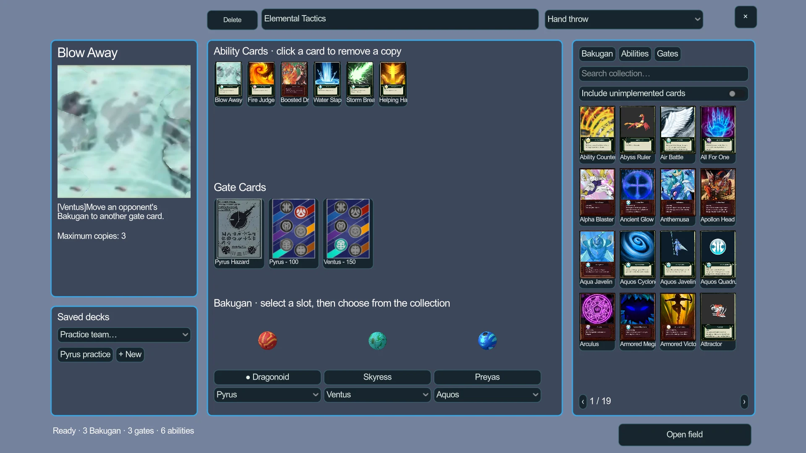
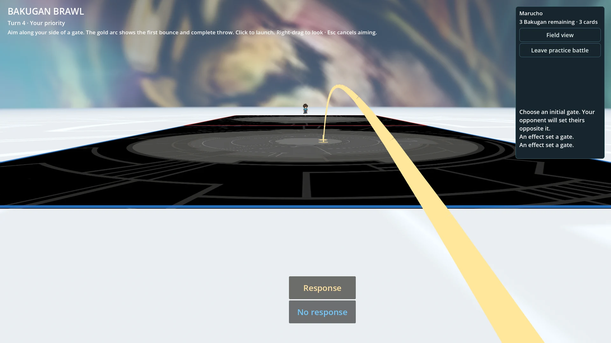
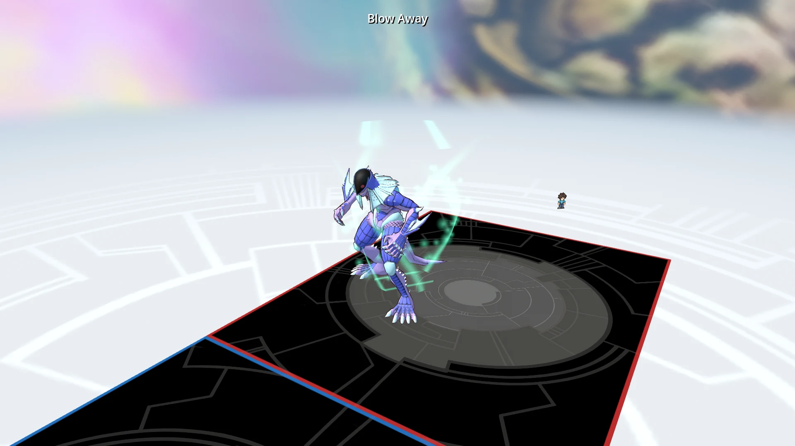
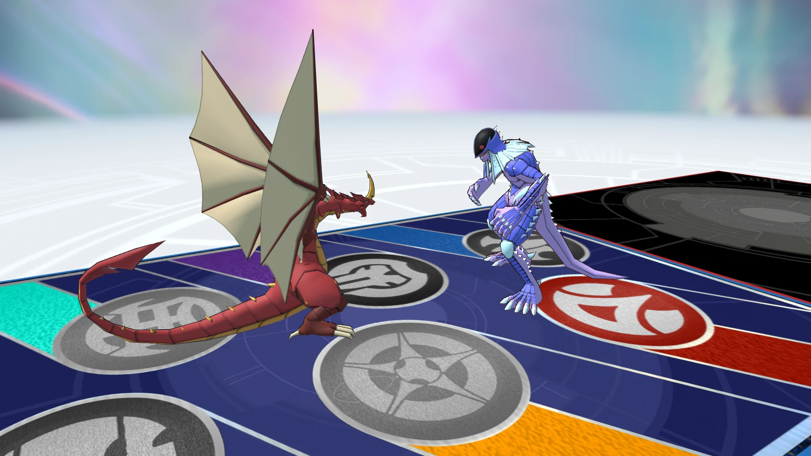
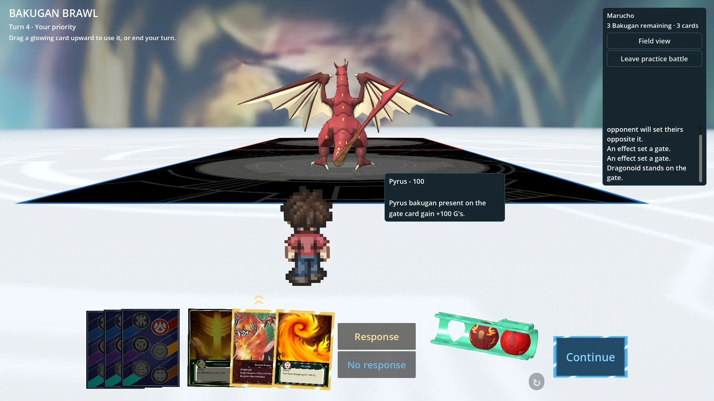

{kind=link}
{kind=link}
{kind=link}
{kind=link}
{kind=link}
Development work
Game systems, reusable content definitions, custom interfaces, save handling, asset integration and diagnostic tools.
Technical case study
A connected game world with local battles, character customization, and development tools.
I am building the project in Godot, connecting a battle engine, deck and character interfaces, persistent player choices, and world exploration. The engineering work centers on reusable game rules, reliable player data, and keeping a detailed world responsive.
Portfolio scope: BakuQuest is an unofficial personal fan project. Third-party characters, artwork and assets are used to demonstrate the software; they are not presented as my original artwork.
System 01
Battle rules run independently of scene input, camera work and rendering. Commands are checked before they change the state, making a rules failure easier to separate from a presentation issue.
System 02
Catalog definitions and validation connect deck selection to battle behavior. The interface presents available content while the rules decide which actions are legal.
System 03
Character recipes describe clothing, colors and other selections using structured data. The save store checks data before use and preserves previous valid records when writing updates.
System 04
The connected world includes walking, driving and environmental presentation. Movement and collision are exercised by focused regression checks and repeatable diagnostic routes.
System 05
Optimization work includes baked lighting, occlusion culling, shared texture atlases, mesh batching and level-of-detail handling. Profiling uses movement and camera routes to check the actual workload.
Battle mechanics
Build a team, choose where to throw, and use cards to change the outcome. These examples show the local battle system in the current project.
01
The deck builder brings your Bakugan, gate cards and ability cards together. You can read what each card does and choose cards that work with your team.

02
Gate cards create the spaces where battles take place. You aim and throw a Bakugan onto a card, where it opens into a creature. Where you land helps decide which opponents you face.

03
Abilities can do more than raise power. Blow Away moves an opposing Bakugan to another gate card, changing who shares a space and where the next fight can happen. Players can respond to abilities, and a chain resolves with the last ability played first.

04
When opponents meet on a gate card, the card and their abilities can change their power. In a standard battle, the game compares each side’s total power to decide the winner; arriving first breaks a tie. Defeated Bakugan leave play, and the match ends when a player has none remaining.

More demonstrations
Ability effects, character controls and world systems in action.
Screenshots

Project scope
Local battles, deck building, saved character presets, vehicles and world interactions share a project with separate responsibilities for rules, data and presentation.
Game systems, reusable content definitions, custom interfaces, save handling, asset integration and diagnostic tools.
Consistent state, command validation, recoverable data, runtime performance and repeatable regression checks.
The project is in development. Local practice battles are implemented; network multiplayer remains planned.
Runtime architecture
Continue exploring
Explore PokePet for desktop-window management, persistent configuration and native platform integration.